panelviz
An R package for visualising any panel (longitudinal) data: say which column is the individual and which is time, and get publication-ready charts.
Overview
panelviz is an R package for visualising any panel (longitudinal) data. Given the column that identifies the individual and the column that records time, it recognises the time format, aggregates the data over time and across individuals, and draws publication-ready charts. It provides a consistent set of functions for each stage:
-
read_panel(),as_panel()andas_panel_wide()declare a data frame, file or URL as a panel (csv, tsv, Stata, SPSS, rds). -
panel_aggregate()aggregates in two stages: within each individual over time, then across individuals by group. -
panel_line(),panel_heatmap(),panel_spaghetti(),panel_tracking(),panel_band(),panel_bar(),panel_stacked()andpanel_distribution()draw the data. All share the same arguments. -
panel_figure()andsave_panel()compose numbered multi-panel figures and save any chart. -
panel_styles()anduse_panel_style()select one of five looks:economist(the default),ft,clean,darkandmono.
library(panelviz)
nls <- read_panel("https://www.stata-press.com/data/r18/nlswork.dta", id = idcode, time = year)
nls
#> # A tidy panel: 4,711 individuals x 15 periods (year), 1968-01-01 to 1988-01-01
#> # id = idcode | time = year | unbalanced (40% of id-period cells filled) | 28,534 obs
panel_line(nls, "ln_wage", by = "race")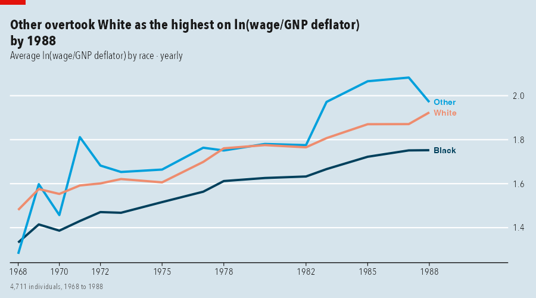
Why
Panel data consists of repeated observations of the same individuals over time, stored in long format with one row per individual and time point. It arises in economics and business (firms, households, markets), public health and epidemiology (patients, clinic visits, countries), education and psychology (pupils, terms, study sessions), tourism and retail (regions, stores, quarters) and organisational analytics (employees, weeks). Terminology differs by discipline: panel data in economics, longitudinal data or repeated measures in medicine and psychology, time-series cross-section in political science, and grouped or hierarchical time series in forecasting. The individual may be called a subject, unit, entity or participant, and time a wave, occasion, visit or period.
Analysing such data involves a recurring sequence of steps: identifying the individual and time variables and parsing the time format, aggregating over time within each individual, aggregating across individuals into groups, and presenting the result in a form suitable for publication. Errors tend to arise at the aggregation steps, for example summing a stock variable where its last value is meant, or reporting a statistic for a group too small to be meaningful.
panelviz implements this sequence behind a single declaration of the individual and time variables. It originates in the plotting functions of wpa and vivainsights, which were developed for weekly Viva Insights person-level data, and generalises them to any panel.
How
-
Time formats are detected. Dates, hourly timestamps, years, two-digit years,
"1998 Q1","2020-03", ISO weeks,yyyymm, text dates, Stata%tm,%tqand%tyvalues and plain indices are supported. Ambiguous dates and repeated id-time rows stop with an informative error instead of being guessed. -
Aggregation has two stages, because a panel has two dimensions. Time is collapsed within each individual first (
fun_time:sumfor flows,lastfor stocks), then individuals are collapsed into groups (fun_group:mean,median,p90or any function).min_nsuppresses groups with too few individuals, and the chart footer reports it. -
Every chart takes the same arguments.
by,period,fun_time,fun_group,min_n,tag,source,styleandreturn = "table"have the same meaning in each function. -
Text is derived from the data. The title reports what changed, which group leads or which overtook another; the subtitle states what was calculated; Stata variable labels are used as names. Both can be overridden with
titleandsubtitle. -
Axes select their own units (
950,1.2K,6M), detect percentages, and show the year only where it changes. -
Fonts degrade gracefully. The best available condensed typeface is used (
panel_font()); a device that cannot render it redraws with its default font.
Tested on
| Dataset | Individual and time |
|---|---|
Stata nlswork
|
numeric id, two-digit years, unbalanced |
Stata grunfeld, abdata
|
company or firm id, year |
Stata reshape1
|
wide: inc80 inc81 ..., ue80 ue81 ...
|
Gasoline, Fatalities (Rdatasets) |
country or state id, year |
tourism (Rdatasets) |
composite id of region, state and purpose; 1998 Q1 quarters |
| Gapminder | country, 5-year steps |
| COVID-19 daily counts | 198 countries, ISO dates, 816 days |
wpa sample data |
hashed person id, text dates 12/15/2019
|
data-raw/fetch.R and data-raw/check_examples.R reproduce these checks.
Installation
# The development version from GitHub:
# install.packages("pak")
pak::pak("AdvancedPeopleAnalytics/panelviz")
# or
# install.packages("remotes")
remotes::install_github("AdvancedPeopleAnalytics/panelviz")panelviz requires R 4.1 or later. The optional packages haven (Stata and SPSS files), readr (csv), systemfonts and ragg (typefaces and font rendering) extend what it can read and how it renders.
After installing, run vignette("getting-started", "panelviz") for a worked introduction: declare the panel, aggregate in two stages, and draw each chart type on simulated data.
Use with Claude Code
The repository ships a Claude Code skill, .claude/skills/panelviz/SKILL.md, that lets Claude use panelviz as a charting engine: point it at a file, name the individual and time columns, and it writes and checks the chart. Open Claude Code in a clone of this repository and it is picked up automatically. To use it in any project, copy the folder to ~/.claude/skills/panelviz/.
Examples
Every command below is the one that produced the output next to it. First, the data:
library(panelviz)
# Stata dta, text csv and daily csv, straight from the web: id = who, time = when
nls <- read_panel("https://www.stata-press.com/data/r18/nlswork.dta",
id = idcode, time = year, source = "US Bureau of Labor Statistics, NLS of Young Women")
gm <- read_panel("https://raw.githubusercontent.com/plotly/datasets/master/gapminderDataFiveYear.csv",
id = country, time = year, source = "Gapminder")
tour <- read_panel("https://vincentarelbundock.github.io/Rdatasets/csv/tsibble/tourism.csv",
id = c(Region, State, Purpose), time = Quarter, source = "Tourism Research Australia")
covid <- read_panel("https://raw.githubusercontent.com/datasets/covid-19/main/data/countries-aggregated.csv",
id = Country, time = Date, source = "Johns Hopkins CSSE")
gf <- read_panel("https://www.stata-press.com/data/r18/grunfeld.dta",
id = company, time = year, source = "Grunfeld (1958)")Declare the panel
Say which column is the individual and which is time. panelviz recognises the time format, sorts the data and reports its shape: 4,711 women observed in 15 survey years, unbalanced because not everyone answered every year.
-
id: one column, or several for a composite key (c(Region, State, Purpose)) -
time: the time column, in almost any format -
source: printed as “Source: …” in every chart footer
print(nls, n = 3)# A tidy panel: 4,711 individuals x 15 periods (year), 1968-01-01 to 1988-01-01
# id = idcode | time = year | unbalanced (40% of id-period cells filled) | 28,534 obs
# A tibble: 28,534 × 23
.id .time idcode year birth_yr age race msp nev_mar grade collgrad not_smsa c_city
* <chr> <date> <dbl> <dbl> <dbl> <dbl> <dbl+lb> <dbl> <dbl> <dbl> <dbl> <dbl> <dbl>
1 1 1970-01-01 1 70 51 18 2 [Blac… 0 1 12 0 0 1
2 1 1971-01-01 1 71 51 19 2 [Blac… 1 0 12 0 0 1
3 1 1972-01-01 1 72 51 20 2 [Blac… 1 0 12 0 0 1
# ℹ 28,531 more rows
# ℹ 10 more variables: south <dbl>, ind_code <dbl>, occ_code <dbl>, union <dbl>, wks_ue <dbl>,
# ttl_exp <dbl>, tenure <dbl>, hours <dbl>, wks_work <dbl>, ln_wage <dbl>Time formats are detected
The same call handles quarters, ISO weeks, US-style dates, yyyymm numbers and hourly timestamps. Ambiguous input (01/02/2020) stops with a message instead of guessing; pass time_format to choose.
-
time_format:NULL(detect), astrptime()string such as"%d.%m.%Y", or"year","quarter","month","week","index"
what <- list(quarters = c("1998 Q1", "1998 Q2"), iso_weeks = c("2020-W01", "2020-W02"),
us_dates = c("12/15/2019", "12/22/2019"), yyyymm = c(202001, 202002),
hourly = c("2024-03-01 00:00:00", "2024-03-01 01:00:00"), two_digit_years = c(68, 69))
sapply(what, function(x) unlist(panel_meta(as_panel(data.frame(id = 1, t = x), id, t))[c("kind", "freq")])) quarters iso_weeks us_dates yyyymm hourly two_digit_years
kind "quarter" "week" "date" "month" "hour" "year"
freq "quarter" "week" "week" "month" "hour" "year" Wide data
One column per period (and per measure) is pivoted to long format first. Here Stata’s reshape1 has inc80 inc81 inc82 and ue80 ue81 ue82.
-
cols: the period columns (tidyselect) -
names_pattern: regular expression with two groups, measure then period;NULLwhen the column names are the periods
wide <- as_panel_wide(haven::read_dta("https://www.stata-press.com/data/r18/reshape1.dta"),
id, cols = c(starts_with("inc"), starts_with("ue")),
names_pattern = "^(inc|ue)(\\d+)$")
wide# A tidy panel: 3 individuals x 3 periods (year), 1980-01-01 to 1982-01-01
# id = id | time = period | balanced | 9 obs
# A tibble: 9 × 7
.id .time id sex period inc ue
* <chr> <date> <dbl> <dbl> <chr> <dbl> <dbl>
1 1 1980-01-01 1 0 80 5000 0
2 1 1981-01-01 1 0 81 5500 1
3 1 1982-01-01 1 0 82 6000 0
4 2 1980-01-01 2 1 80 2000 1
5 2 1981-01-01 2 1 81 2200 0
6 2 1982-01-01 2 1 82 3300 0
7 3 1980-01-01 3 0 80 3000 0
8 3 1981-01-01 3 0 81 2000 0
9 3 1982-01-01 3 0 82 1000 1Aggregate in two stages
Panel data has two dimensions, so aggregation has two stages. First, within each individual, time is collapsed into period (fun_time). Then individuals are collapsed into groups (fun_group). Here: each tourism flow’s yearly total trips, then the mean across flows in each state. .n is the number of individuals behind each value.
-
vars: numeric columns to summarise (default all) -
by: grouping column(s);NULLfor one overall series;".id"keeps individuals -
period:"hour","day","week","month","quarter","year"or"all" -
fun_time,fun_group:mean median sum sd min max first last n share p10 p90 ...or any function -
min_n: drop group-periods with fewer individuals
panel_aggregate(tour, "Trips", by = "State", period = "year", fun_time = "sum", fun_group = "mean")# A tibble: 160 × 4
.period State Trips .n
<date> <chr> <dbl> <int>
1 1998-01-01 ACT 463. 4
2 1999-01-01 ACT 495. 4
3 2000-01-01 ACT 523. 4
4 2001-01-01 ACT 522. 4
5 2002-01-01 ACT 493. 4
6 2003-01-01 ACT 486. 4
7 2004-01-01 ACT 470. 4
8 2005-01-01 ACT 497. 4
9 2006-01-01 ACT 473. 4
10 2007-01-01 ACT 489. 4
# ℹ 150 more rowsLine: one overall series
The title is computed from the data. Axes use the best units, and the year appears only where it changes.
-
var: the variable to plot
panel_line(nls, "ln_wage")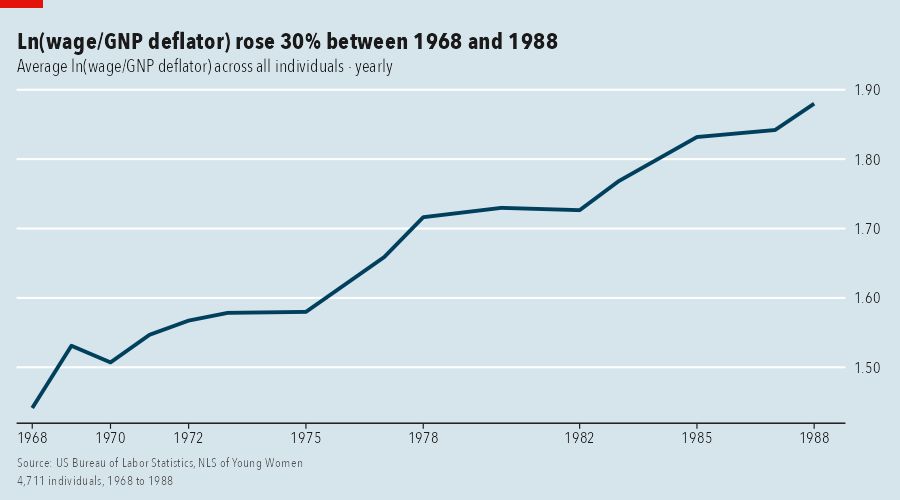
Line: one line per group
Lines are labelled directly. When the leader changes, the headline says who overtook whom.
-
by: the grouping column -
max_groups: keep the largest groups (default 10)
panel_line(gm, "lifeExp", by = "continent")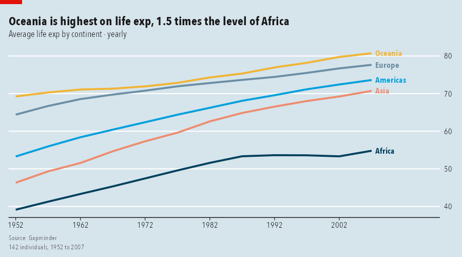
Line: highlight one group, index to 100
Grey out every group except the one being discussed, and rebase every group so that its first period equals 100.
-
highlight: group name(s) to emphasise -
index:TRUErebases each group to 100 at its first period
panel_line(gf, "invest", by = "company", highlight = "1", index = TRUE)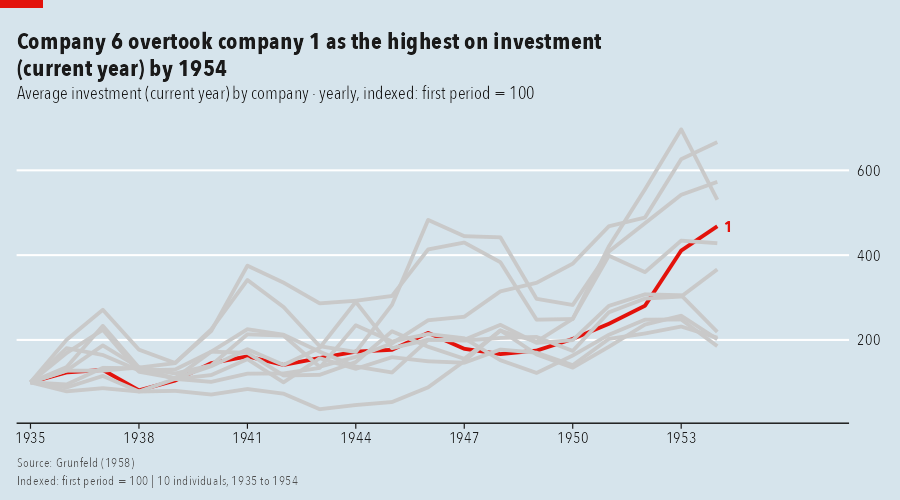
Coarsen time: quarters to years
period changes the time unit, and fun_time says how each individual’s quarters combine: here the yearly total of each tourism flow, averaged by state.
period = "year"-
fun_time = "sum": flows add up; use"last"for stocks and cumulative counts
panel_line(tour, "Trips", by = "State", period = "year", fun_time = "sum")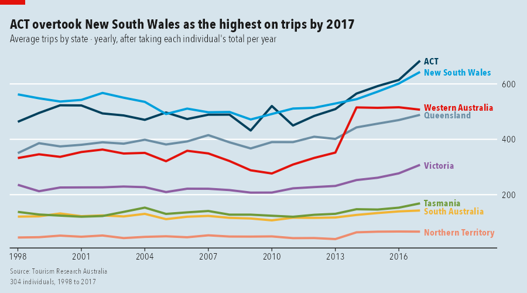
A different summary, and a privacy floor
Show the 90th percentile instead of the mean, and hide any state-year with fewer than 30 individuals. The footer says groups were hidden.
fun_group = "p90"min_n = 30
panel_line(tour, "Trips", by = "State", period = "year", fun_group = "p90", min_n = 30)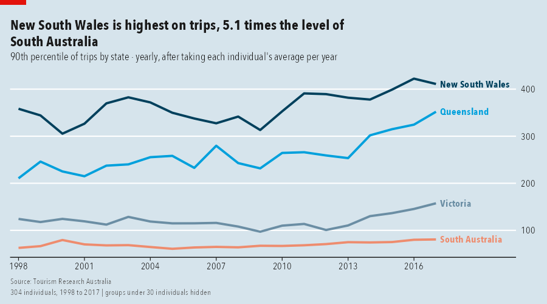
Small multiples and a log scale
One panel per group with free y axes; log = TRUE is useful when groups differ by orders of magnitude.
facet = TRUElog = TRUE
panel_line(gm, "gdpPercap", by = "continent", facet = TRUE, log = TRUE)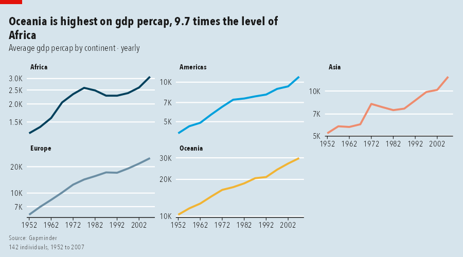
Heatmap: groups by time
Rows are groups, columns are periods, colour is the value. Rows are sorted by level. With by = NULL the rows are individuals.
-
by,period,fun_time,fun_groupas above -
max_rows: rows shown when rows are individuals (default 40)
panel_heatmap(tour, "Trips", by = "State", period = "year")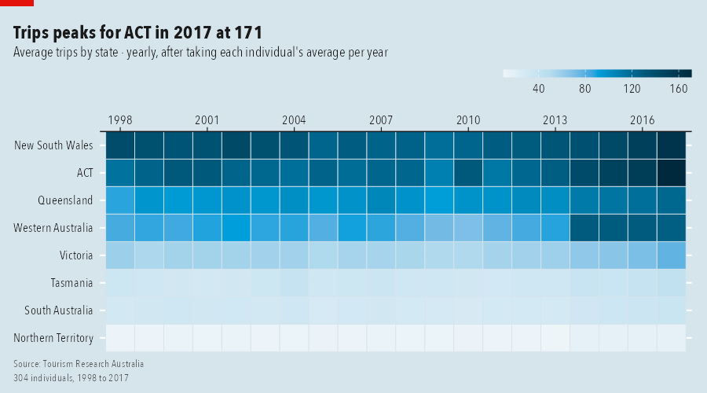
Heatmap of individuals, diverging colours
With by = NULL every row is one individual (here 30 of 142 countries, evenly spaced by level). diverge centres the colour scale on the overall mean, so blue is below average and red above.
-
by = NULL: rows are individuals -
max_rows: how many rows to show diverge = TRUE
panel_heatmap(gm, "lifeExp", max_rows = 30, diverge = TRUE)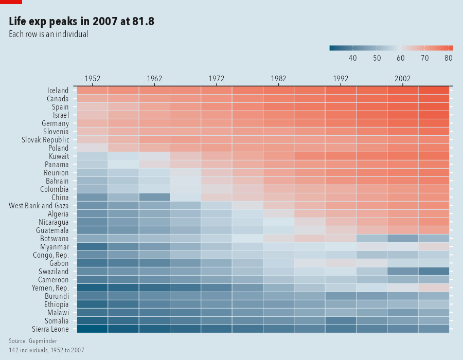
Spaghetti: individuals and the average
Thin lines are individuals, the bold line is the group summary. A log axis keeps small firms visible next to large ones.
-
n_ids: how many individual lines to draw (random sample, reproducible withseed) log = TRUE
panel_spaghetti(gf, "invest", log = TRUE)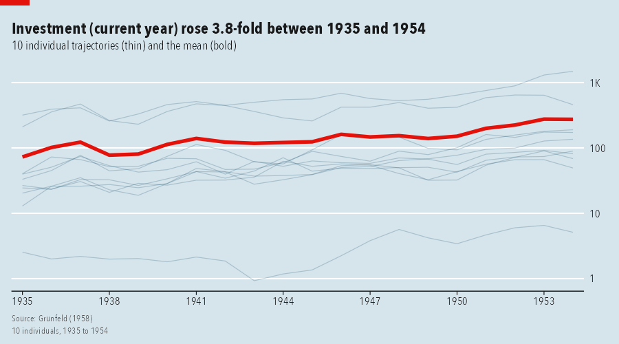
Tracking: a series and its rolling average
Cumulative counts per country become a weekly series: each country’s last value of the week, summed across countries, with a 4-week rolling average.
-
window: periods in the rolling average -
fun_time = "last",fun_group = "sum"
panel_tracking(covid, "Confirmed", period = "week", fun_time = "last", fun_group = "sum", window = 4)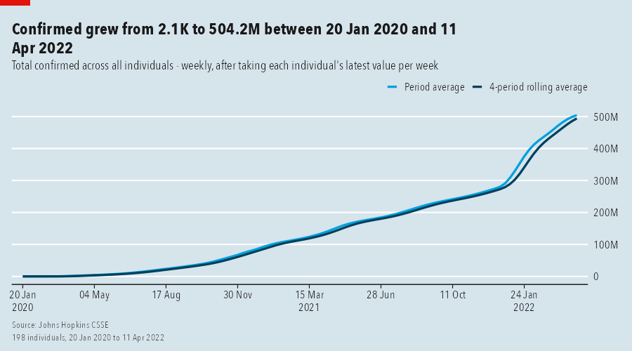
Band: the spread across individuals
The median line with a shaded percentile band shows spread, not just the centre. The headline reports whether the spread widened.
-
lower,upper: band edges ("p10","p90", …) -
centre: line summary (default"median")
panel_band(nls, "ln_wage", by = "race", lower = "p10", upper = "p90")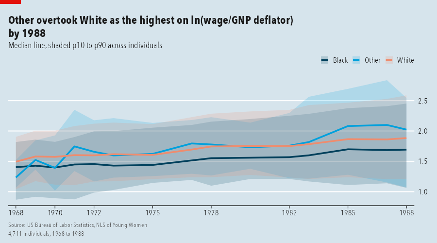
Bars: ranked groups
Time is collapsed (period = "all"). Names sit inside long bars; group sizes are in the subtitle.
-
top_n: groups shown (default 15) -
decreasing: sort order
panel_bar(tour, "Trips", by = "State")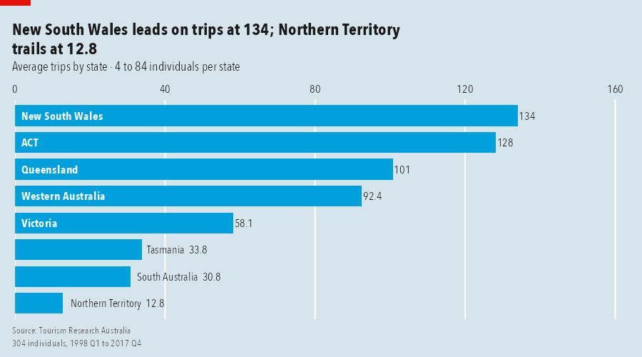
Stacked bars: composition
Several measures stacked within each group. Segment labels that would not fit are hidden.
-
vars: two or more columns -
min_label: smallest share of the longest bar that gets a label
panel_stacked(gf, c("invest", "kstock"), by = "company", top_n = 6)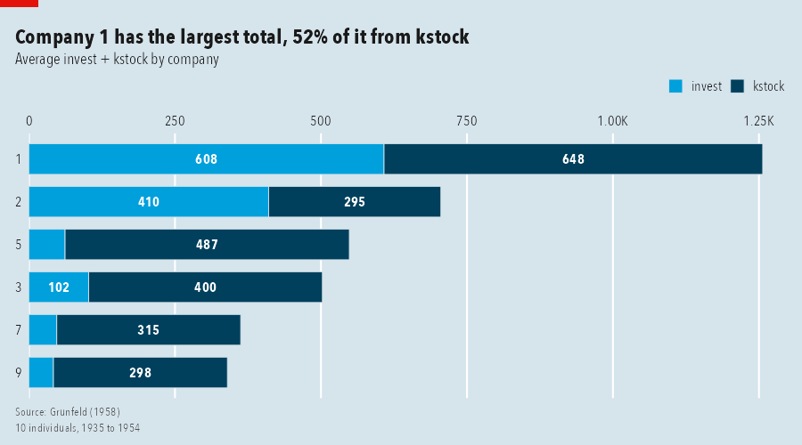
Distribution of individuals
Each individual’s average over time, then the distribution across individuals, by group.
-
period = "all",fun_time = "mean"
panel_distribution(nls, "ln_wage", by = "race")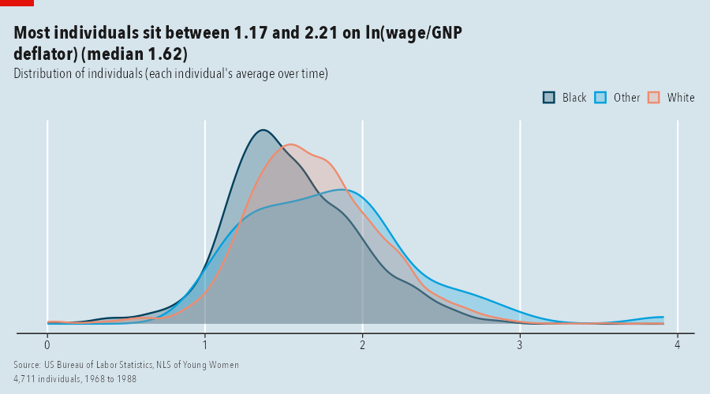
Style, tag, title and source
Five looks ship with the package: economist (default), ft, clean, dark, mono. Any computed text can be overridden. The numbered square is for figure references.
-
style: one ofpanel_styles()(oruse_panel_style("ft")for the session) -
tag: number or label in the top-right square -
title,subtitle,source
panel_bar(tour, "Trips", by = "State", style = "ft", tag = 2,
title = "New South Wales and Victoria dominate", source = "Tourism Research Australia, 1998-2017")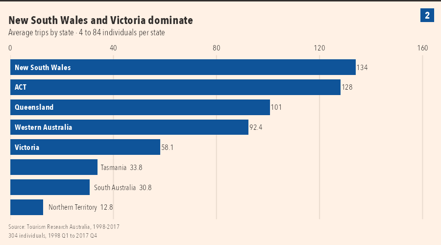
Numbered figure from several charts
panel_figure() lays charts out under one headline, numbers the panels and shares one source and notes footer.
-
ncol,heights,widths: layout -
title,subtitle,source,notes: shared text -
tags = TRUE: number the panels
fig <- panel_figure(
list(panel_line(gm, "lifeExp", by = "continent"),
panel_bar(tour, "Trips", by = "State"),
panel_band(nls, "ln_wage", by = "race", lower = "p10", upper = "p90"),
panel_heatmap(tour, "Trips", by = "Purpose")),
title = "Four views, one grammar", subtitle = "The same panelviz calls on three different panels",
source = "Gapminder; Tourism Research Australia; US Bureau of Labor Statistics",
notes = "Individuals are countries, tourism flows and women respectively.")
save_panel(fig, "figure.png", width = 14, height = 9)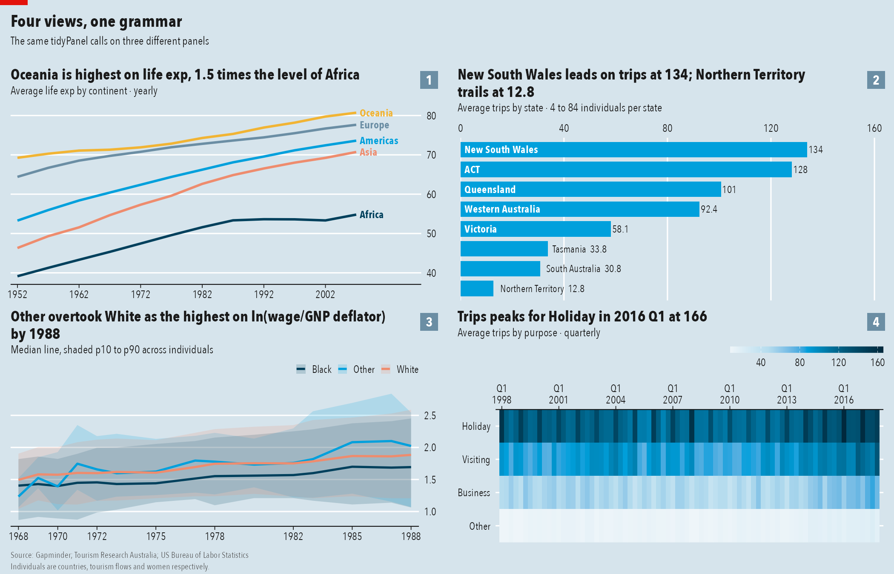
Get the numbers behind any chart
Every chart takes return = "table" and hands back exactly what it drew.
return = "table"
panel_line(gm, "lifeExp", by = "continent", return = "table")# A tibble: 60 × 5
.period continent lifeExp .n .group
<date> <chr> <dbl> <int> <chr>
1 1952-01-01 Africa 39.1 52 Africa
2 1957-01-01 Africa 41.3 52 Africa
3 1962-01-01 Africa 43.3 52 Africa
4 1967-01-01 Africa 45.3 52 Africa
5 1972-01-01 Africa 47.5 52 Africa
6 1977-01-01 Africa 49.6 52 Africa
7 1982-01-01 Africa 51.6 52 Africa
8 1987-01-01 Africa 53.3 52 Africa
9 1992-01-01 Africa 53.6 52 Africa
10 1997-01-01 Africa 53.6 52 Africa
# ℹ 50 more rowsNot to be confused with panelView on CRAN, which plots treatment status and outcomes for causal-inference panels. panelviz is a general toolkit: import, aggregate and chart any panel.
Known issues
- Not on CRAN yet.
- Stata
%twweeks are read approximately. - Wide data with several measures needs a
names_pattern; there is no automatic guess. - The red tag and numbered squares are drawn when a chart is printed or saved, so they are lost if a chart is placed inside patchwork or cowplot; use
panel_figure()instead. - Group names in direct line labels can still overlap when many series end at nearly the same value.
- Only R for now.
Authors
panelviz is written by Carlos Morales and Martin Chan. It generalises the plotting approach of wpa and vivainsights, which the two authors developed at Microsoft.